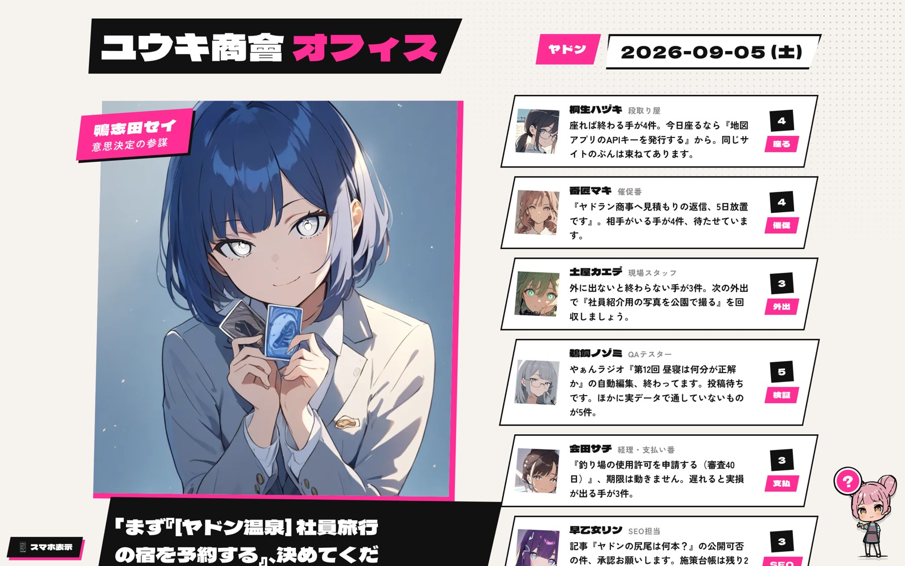

01 見本
ユウキの社員名簿
ランチで見せた画面のデモ版です。社員ごとに名前・顔・口ぐせがあり、それぞれが自分の持ち場の「次にやること」を話します。中身は見本用のデータです。

デモを開く
「ああいうのが見えた方がやりたくなる」Mioさん・ランチにて
02 最初の3人
役割はランチで出た話から
12人いても、最初に雇うのは1人で十分です。Mioさんの仕事なら、この3つのどれかから始めるのが早いと思います。
手配担当工程の叩き台
案件の条件を話すと、日ごとの工程と手配の一覧、確認したい質問を返す。
企画担当面白い1本を探す
来年の提案に入れるユニーク体験を、相手に合わせて3つ選んで理由を添える。
広報担当実績を記事にする
終わった案件のメモから、社名や金額を伏せた実績紹介の下書きを書く。
03 つくる
名前と性格を決める
選ぶたびに下の指示文が書き変わります。好きなものや口ぐせは空欄のままでも動きます。
指示文
手配担当の指示文
04 の手順で「指示」の欄に貼ります
顔をつける
似顔絵を描かせる文
ChatGPTに貼ると絵が出ます。気に入るまで描き直させてOK
04 置き場所
社員1人に部屋を1つ
ChatGPTでもClaudeでも「プロジェクト」という機能を使います。普段使っている方で大丈夫です。
プロジェクトを新しく作る名前は社員の名前にします。描かせた似顔絵をアイコン代わりに保存しておくと、開いた時に誰の部屋か分かります。
「指示」の欄に指示文を貼るプロジェクトの設定にある指示（カスタム指示）の欄です。ここに入れると、毎回説明し直さなくて済みます。
その社員が使う資料を入れる手配担当なら過去の工程表や手配表の型、広報担当なら過去の実績メモ。お手本があるほど、Mioさんの書き方に寄ります。
案件ごとにチャットを分ける同じ部屋の中で、案件1件につき新しいチャットを1つ。話が混ざらず、あとで探すのも楽です。
05 育てる
好みに寄せていく
直したら、指示にも1行足す返事が気に入らない時はその場で直させるだけでなく、「次からは〜して」を指示の欄に書き足します。同じ注意を2回しなくなります。
1人が回ってから2人目週に何回か自然に話しかけるようになったら、次の役割を雇います。最初から3人並べると、誰にも話しかけなくなります。
3人そろったら名簿にする名前と顔を1枚に並べると、上のデモのような「自分の会社」になります。ここはユウキが作れます。
決めておくと安心なこと。どの指示文にも「推測で埋めずに質問する」「金額・日程・相手先は私が出した情報だけを使う」を入れてあります。お客さんの名前や見積もりを外に出す文章を作らせる時は、必ずMioさんが目を通してから使ってください。
06 一緒に
1人目は一緒に作れます
作業会に来てもらえれば、その場で1人目の部屋を作って、実際の案件で1回話しかけるところまでやります。名前と役割だけ考えておいてもらえれば十分です。